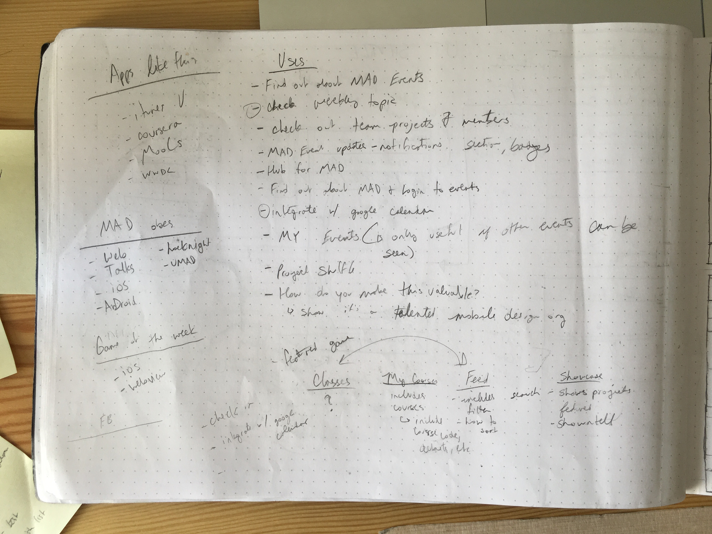
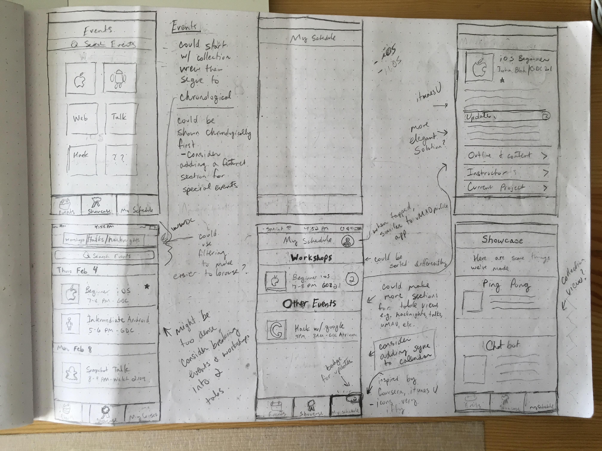

App for Mobile App Development at UT Austin.
inVision Prototype
Purpose:
This design is for an app that would allow all members of MAD to stay up to date with events in the organization, to check-in to events, and to keep track of their weekly classes.
Roles:
UX/UI Design - Wire-Framing, Prototyping, Sketching, User Testing
Requirements, concept, research:
I worked with members of MAD to create a list of features the app should have. I researched how MOOC apps (Coursera) were structured and how event based apps were structured (WWDC). The resulting design is a synthesis of those two types of apps.

Sketching and Wireframing:

inVision and user testing
After I had done a couple of iterations while working with the development team and the design director at MAD, we reached a prototype we felt was close to what we wanted. I tested this prototype with 4 members of MAD at a hacknight. For this testing, I did a cognitive walkthrough that led to some great insights that woule result in this final prototype.